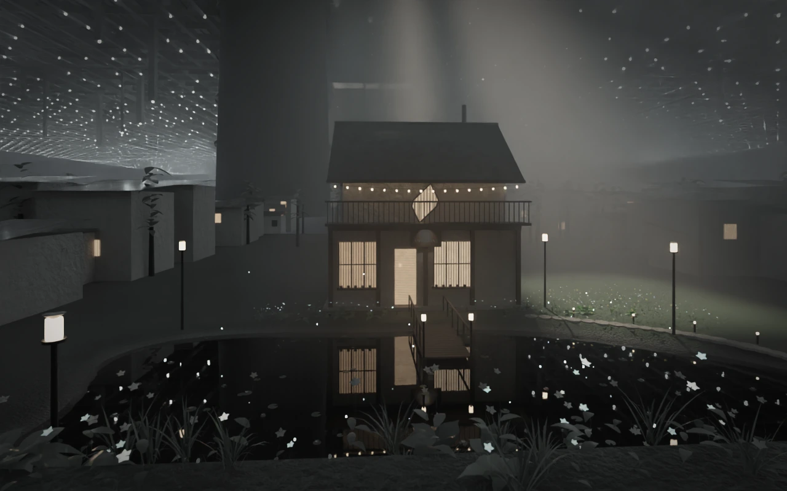

Beneath the plate, in the dark of the undercity, the house of Antimony Systems stands over a still pond: warm windows, a tall window cut to the shape of a crystal, a timber jetty with two small lanterns, lamp posts and path lights round the banks. Lilies, white flowers and softly glowing sky-blue ones fill the near bank, motes of blue light drift over the water, and a beam of daylight falls through a gap in the plate onto the garden. The plate and one of its pillars stand overhead like a dark sky.

The moats are drying up. The makers are still here.